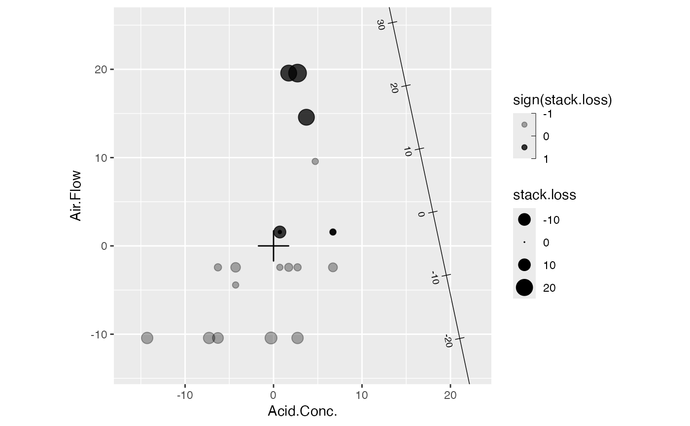
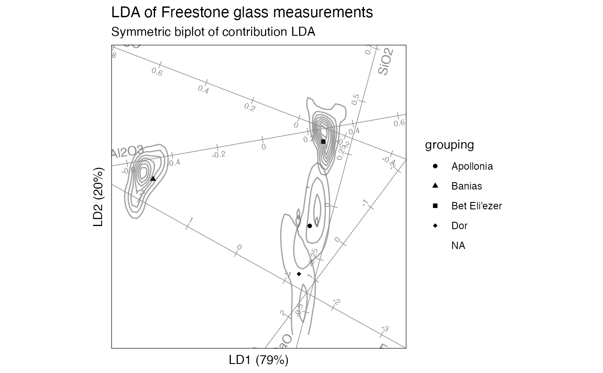

Determine axis limits and offset vectors from reference data.
stat_rule(
mapping = NULL,
data = NULL,
geom = "rule",
position = "identity",
fun.lower = "minpp",
fun.upper = "maxpp",
fun.offset = "minabspp",
fun.args = list(),
referent = NULL,
show.legend = NA,
inherit.aes = TRUE,
...
)
minpp(x, p = 0.1)
maxpp(x, p = 0.1)
minabspp(x, p = 0.1)Set of aesthetic mappings created by aes(). If specified and
inherit.aes = TRUE (the default), it is combined with the default mapping
at the top level of the plot. You must supply mapping if there is no plot
mapping.
The data to be displayed in this layer. There are three options:
If NULL, the default, the data is inherited from the plot
data as specified in the call to ggplot().
A data.frame, or other object, will override the plot
data. All objects will be fortified to produce a data frame. See
fortify() for which variables will be created.
A function will be called with a single argument,
the plot data. The return value must be a data.frame, and
will be used as the layer data. A function can be created
from a formula (e.g. ~ head(.x, 10)).
The geometric object to use to display the data for this layer.
When using a stat_*() function to construct a layer, the geom argument
can be used to override the default coupling between stats and geoms. The
geom argument accepts the following:
A Geom ggproto subclass, for example GeomPoint.
A string naming the geom. To give the geom as a string, strip the
function name of the geom_ prefix. For example, to use geom_point(),
give the geom as "point".
For more information and other ways to specify the geom, see the layer geom documentation.
A position adjustment to use on the data for this layer. This
can be used in various ways, including to prevent overplotting and
improving the display. The position argument accepts the following:
The result of calling a position function, such as position_jitter().
This method allows for passing extra arguments to the position.
A string naming the position adjustment. To give the position as a
string, strip the function name of the position_ prefix. For example,
to use position_jitter(), give the position as "jitter".
For more information and other ways to specify the position, see the layer position documentation.
Functions used to determine the limits
of the rules and the translations of the axes from the projections of
referent onto the axes and onto their normal vectors.
Optional additional arguments passed on to the functions.
The reference data set; see Details.
logical. Should this layer be included in the legends?
NA, the default, includes if any aesthetics are mapped.
FALSE never includes, and TRUE always includes.
It can also be a named logical vector to finely select the aesthetics to
display.
If FALSE, overrides the default aesthetics,
rather than combining with them. This is most useful for helper functions
that define both data and aesthetics and shouldn't inherit behaviour from
the default plot specification, e.g. borders().
Additional arguments passed to ggplot2::layer().
A numeric vector.
A numeric value; the proportion of a range used as a buffer.
A ggproto layer.
Biplots with several axes can become cluttered and illegible. When this happens, Gower, Gardner–Lubbe, & le Roux (2011) recommend to translate the axes to a new point of intersection away from the origin, adjusting the axis markers accordingly. Then the axes converge in a region of the plot offset from most position markers or other elements. An alternative solution, implemented in the bipl5 package, is to translate each axis orthogonally away from the origin, which preserves the axis markers. This is the technique implemented here.
Separately, axes that fill the plotting window are uninformative when they exceed the range of the plotted position markers projected onto them. They may even be misinformative, suggesting that linear relationships extrapolate outside the data range. In these cases, Gower and Harding (1988) recommend using finite ranges determined by the data projection onto each axis.
Three functions control these operations: fun.offset computes the
orthogonal distance of each axis from the origin, and fun.lower and
fun.upper compute the distance along each axis of the endpoints to the
(offset) origin. Both functions depend on what position data is to be offset
from or limited to, which must be passed manually to the referent
parameter.
This statistical transformation is done with respect to reference data passed
to referent (ignored if NULL, the default, possibly resulting in empty
output). See stat_referent() for more details. This relies on a sleight of
hand through a new undocumented LayerRef class and associated
ggplot2::ggplot_add() method. As a result, only layers constructed using
this stat_*() shortcut will pass the necessary positional aesthetics to the
$setup_params() step, making them available to pre-process referent data.
The biplot shortcuts automatically substitute the complementary matrix factor
for referent = NULL and will use an integer vector to select a subset from
this factor. These uses do not require the mapping passage.
ggbiplot() uses ggplot2::fortify() internally to produce a single data
frame with a .matrix column distinguishing the subjects ("rows") and
variables ("cols"). The stat layers stat_rows() and stat_cols() simply
filter the data frame to one of these two.
The geom layers geom_rows_*() and geom_cols_*() call the corresponding
stat in order to render plot elements for the corresponding factor matrix.
geom_dims_*() selects a default matrix based on common practice, e.g.
points for rows and arrows for columns.
These are calculated during the statistical transformation and can be accessed with delayed evaluation.
axisunique axis identifier (integer)
lower,upperdistances to endpoints from origin (before offset)
yintercept,xinterceptintercepts (possibly Inf) of offset axis
Gower JC, Gardner–Lubbe S, & le Roux NJ (2011) Understanding Biplots. Wiley, ISBN: 978-0-470-01255-0. https://www.wiley.com/go/biplots
Gower JC & Harding SA (1988) "Nonlinear biplots". Biometrika 75(3): 445–455. doi:10.1093/biomet/75.3.445
Other stat layers:
stat_bagplot(),
stat_center(),
stat_chull(),
stat_cone(),
stat_depth(),
stat_projection(),
stat_scale(),
stat_spantree()
# Freestone primary glass measurements
print(glass)
#> # A tibble: 68 × 16
#> Site Anal Context Form SiO2 TiO2 Al2O3 FeO MnO MgO CaO Na2O
#> <chr> <chr> <chr> <chr> <dbl> <dbl> <dbl> <dbl> <dbl> <dbl> <dbl> <dbl>
#> 1 Bet Eli'… 1 L14.B1… Chunk 76.0 NA 3.29 0.45 0.1 0.57 5.96 12.1
#> 2 Bet Eli'… 2 L14.B1… Chunk 73.6 0.16 3.7 0.85 NA 0.68 6.65 13.0
#> 3 Bet Eli'… 3 L14.B1… Chunk 75.0 0.13 3.36 0.53 NA 0.58 7.27 11.4
#> 4 Bet Eli'… 4 L14.B1… Chunk 76.0 NA 3.06 0.35 0.1 0.61 7.63 11.3
#> 5 Bet Eli'… 5 L14.B1… Chunk 75.9 NA 3.13 0.33 NA 0.65 7.49 11.4
#> 6 Bet Eli'… 6 L14.B1… Chunk 74.4 0.14 3.33 0.45 NA 0.62 7.2 12.6
#> 7 Bet Eli'… 29 L31.B3… Chunk 75.8 0.09 3.27 0.52 NA 0.64 6.52 11.8
#> 8 Bet Eli'… 30 L31.B3… Chunk 73.4 0.11 3.5 0.68 NA 0.58 7.73 12.8
#> 9 Bet Eli'… 31 L31.B3… Chunk 75.2 0.11 3.39 0.49 NA 0.53 7.28 11.7
#> 10 Bet Eli'… 32 L31.B3… Chunk 73.7 0.16 3.42 0.53 NA 0.6 7.7 12.4
#> # ℹ 58 more rows
#> # ℹ 4 more variables: K2O <dbl>, P2O5 <dbl>, Cl <dbl>, SO3 <dbl>
# default (standardized) linear discriminant analysis of sites on measurements
glass_lda <- MASS::lda(Site ~ SiO2 + Al2O3 + FeO + MgO + CaO, glass)
# bestow 'tbl_ord' class & augment observation, centroid, and variable fields
as_tbl_ord(glass_lda) %>%
augment_ord() %>%
print() -> glass_lda
#> # A tbl_ord of class 'lda': (72 x 3) x (5 x 3)'
#> # 3 coordinates: LD1, LD2, LD3
#> #
#> # Rows (principal): [ 72 x 3 | 5 ]
#> LD1 LD2 LD3 | name prior counts grouping
#> | <chr> <dbl> <int> <chr>
#> 1 1.82 1.21 0.672 | 1 Apollonia 0.132 9 Apollon…
#> 2 -5.62 -0.364 0.00398 | 2 Banias 0.265 18 Banias
#> 3 2.47 -1.63 -0.0833 | 3 Bet Eli'ez… 0.397 27 Bet Eli…
#> 4 1.31 2.84 -0.277 | 4 Dor 0.206 14 Dor
#> 5 2.99 -2.03 1.22 | 5 1 NA NA Bet Eli…
#> # ℹ 67 more rows
#> # ℹ 1 more variable: .element <chr>
#> #
#> # Columns (standard): [ 5 x 3 | 2 ]
#> LD1 LD2 LD3 | name .element
#> | <chr> <chr>
#> 1 0.00681 -0.618 -0.468 | 1 SiO2 active
#> 2 2.05 -1.04 0.660 | 2 Al2O3 active
#> 3 -1.93 -0.165 -2.44 | 3 FeO active
#> 4 -1.76 -1.82 0.599 | 4 MgO active
#> 5 -0.275 -0.0942 -1.42 | 5 CaO active
# row-standard biplot
glass_lda %>%
confer_inertia(1) %>%
ggbiplot(aes(shape = grouping)) +
theme_bw() + theme_biplot() +
geom_rows_point(size = 4) +
geom_rows_point(elements = "score") +
stat_cols_rule(
aes(label = name), color = "#888888", num = 8L,
ref_elements = "score", fun.offset = \(x) minabspp(x, p = .1),
text_size = 2.5, label_dodge = .02
) +
scale_shape_manual(values = c(2L, 3L, 0L, 5L)) +
ggtitle(
"LDA of Freestone glass measurements",
"Row-standard biplot of standardized LDA"
)
#> Warning: Ignoring unknown parameters: `text_size`

# contribution LDA of sites on measurements
glass_lda <-
lda_ord(Site ~ SiO2 + Al2O3 + FeO + MgO + CaO, glass,
axes.scale = "contribution")
# bestow 'tbl_ord' class & augment observation, centroid, and variable fields
as_tbl_ord(glass_lda) %>%
augment_ord() %>%
print() -> glass_lda
#> # A tbl_ord of class 'lda_ord': (72 x 3) x (5 x 3)'
#> # 3 coordinates: LD1, LD2, LD3
#> #
#> # Rows (principal): [ 72 x 3 | 5 ]
#> LD1 LD2 LD3 | name prior counts grouping
#> | <chr> <dbl> <int> <chr>
#> 1 1.82 1.21 0.672 | 1 Apollonia 0.132 9 Apollon…
#> 2 -5.62 -0.364 0.00398 | 2 Banias 0.265 18 Banias
#> 3 2.47 -1.63 -0.0833 | 3 Bet Eli'ez… 0.397 27 Bet Eli…
#> 4 1.31 2.84 -0.277 | 4 Dor 0.206 14 Dor
#> 5 2.99 -2.03 1.22 | 5 1 NA NA Bet Eli…
#> # ℹ 67 more rows
#> # ℹ 1 more variable: .element <chr>
#> #
#> # Columns (standard): [ 5 x 3 | 2 ]
#> LD1 LD2 LD3 | name .element
#> | <chr> <chr>
#> 1 0.166 -0.871 -0.160 | 1 SiO2 active
#> 2 0.663 -0.164 -0.0442 | 2 Al2O3 active
#> 3 -0.142 -0.112 -0.192 | 3 FeO active
#> 4 -0.680 -0.367 0.0694 | 4 MgO active
#> 5 -0.0804 0.151 -0.941 | 5 CaO active
# symmetric biplot
glass_lda %>%
confer_inertia(.5) %>%
ggbiplot(aes(shape = grouping)) +
theme_bw() + theme_biplot() +
geom_rows_point() +
stat_rows_density_2d(elements = "score", alpha = .5, color = "#444444") +
stat_cols_rule(
aes(label = name), geom = "axis", color = "#888888", num = 8L,
ref_elements = "active", fun.offset = \(x) minabspp(x, p = .1),
text_size = 2.5, text_dodge = .025
) +
scale_shape_manual(values = c(16L, 17L, 15L, 18L)) +
ggtitle(
"LDA of Freestone glass measurements",
"Symmetric biplot of contribution LDA"
)
#> Warning: Ignoring unknown parameters: `text_size`
